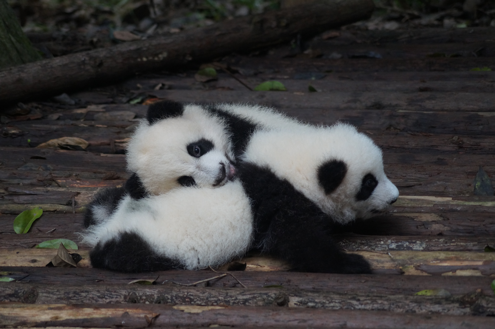
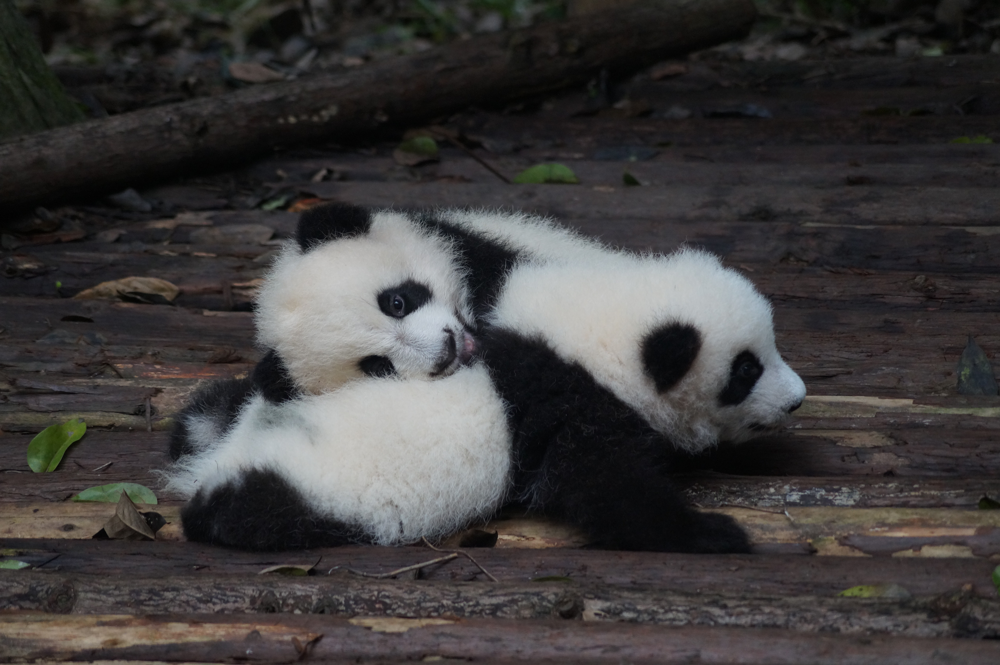

판다[Giant panda]는 팬더라고도 읽는다. 판다라는 이름이 붙은 대왕판다(giant panda:Ailuropoda melanoleuca)와 너구리판다(lesser panda:Ailurus fulgens)를 의미하기도 하나 실제로 포유류 식육목(食肉目) 곰과 판다속에 포함되는 것은 대왕판다 뿐이다. 너구리판다는 미국너구리과(Procynidae)에 속해 있었으나 최근에는 독립적인 한 과인 레서판다과(Ailuridae)로 분류하기도 한다. 너구리판다는 곰보다 스컹크나 족제비, 미국너구리에 더 가깝다. 일반적0으로 판다라고 할 때는 대왕판다를 가리키는 경우가 많다.
 
판다속(Ailuropoda)에는 자이어트판다의 4종이 포함되어 있었으나 3종은 멸종하였고 남아있는 것은 대왕판다(Ailuropoda melanoleuca) 한 종으로 멸종위기종으로 분류되어 있다. 대왕판다는 몸길이 120∼150cm, 몸무게 70∼160kg, 털빛은 검은색과 흰색이다. 중국을 상징하는 동물로 주로 티베트 동부나 중국 북서부에 1,800∼4,000m의 높은 지대의 대나무나 조릿대가 우거진 곳에 서식한다. 식육목에 속해있으나 먹이의 99%가 대나무이며 이 외에 꿀, 새알, 나무뿌리, 풀, 곤충 등을 먹기도 한다. 보통 때에는 단독생활을 하지만 봄철 발정기에는 여러 마리가 모인다. 암컷이 임신 가능한 기간은 1년에 2~3일 정도로 짧고 새끼는 가을부터 겨울에 1∼2마리를 낳는다. 새끼가 걸어다니게 될 때까지는 3개월 정도 걸린다. 앞발의 발목 뼈 하나가 크게 툭튀어 나와 있는데 이 돌기와 다른 발가락으로 먹이를 잡고 먹는다.
너구리판다는 몸길이가 60cm가량으로 갈색의 털을 갖는다. 히말라야, 미얀마 북부, 중국 북서부 등지에 서식하며 너구리판다는 2,000m 안팎의 높은 산의 대나무 숲이나 산림에 사는데 나무타기를 잘한다. 북아메리카에서도 화석이 발견된다. 대왕판다처럼 대나무잎이 주식이며 이외에 과일, 나무열매, 작은 새나 새알, 곤충 등을 먹기도 한다. 야행성이어서 낮에는 나무 위에서 몸을 움추리고 잠을 자며 밤에는 땅에 내려와서 먹이를 찾는다.